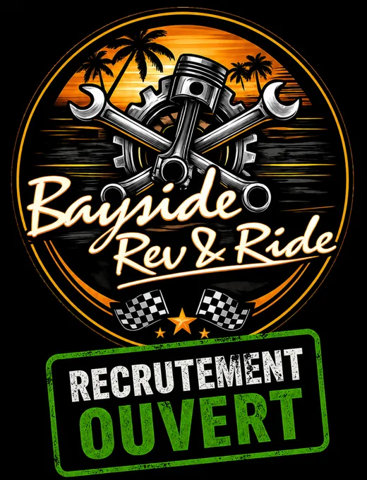
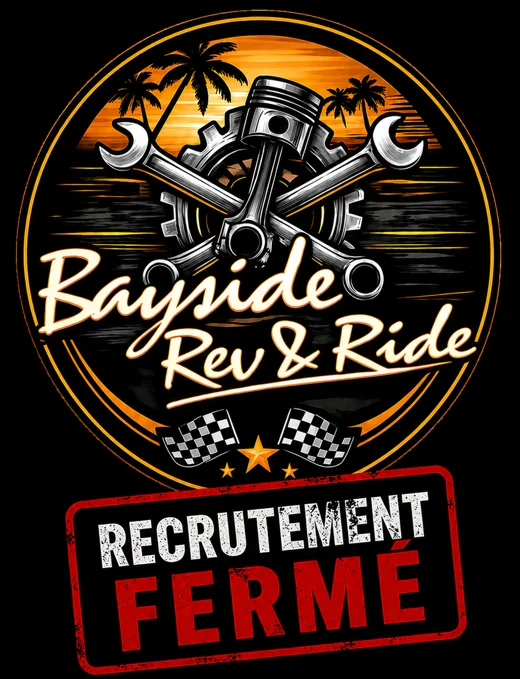

Ce que fait le bot
Un outil interne, relié au site du garage. Les commandes d'administration sont réservées aux administrateurs du serveur.
Tickets
Un salon privé par demande. À la fermeture, la transcription est envoyée aux participants et dans le salon de logs.
Commande /panel_ticket. Transcriptions conservées 15 jours.
Avis sur les mécanos
Les clients notent leur mécano de 1 à 5 et laissent un commentaire, publiés dans le salon d'avis.
Commande /panel_avis
Candidatures
Chaque candidature envoyée depuis le site arrive dans le salon du staff, avec les boutons Accepter et Refuser pour la Direction et les Managers.
Heures de service
Chacun voit ses heures et son quota de la semaine. La Direction et les Managers voient celles de l'équipe.
Commandes /heures et /lier_compte
Sanctions
Une sanction enregistrée sur le site est publiée dans le fil Discord de l'employé concerné.
Commande /lier_fil
Recrutement
Un seul réglage affiche l'état du recrutement dans le salon prévu : ouvert ou fermé.
Commande /recrutement
Accueil et rôles
Message de bienvenue et rôles automatiques pour les nouveaux membres, réglables par un administrateur.
Commande /setup
L'état du recrutement
Voici les deux affiches que le bot publie quand un responsable change l'état du recrutement.

